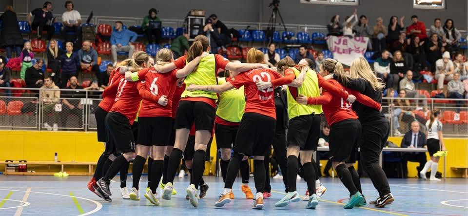
2. futsalová liga žen · Malé Hoštice
Tequilky
Slavia Malé Hoštice
Ženský futsalový tým, který spolu hraje přes dvacet let. Dvakrát mistryně republiky, šest medailí z nejvyšší soutěže.
- mistryně ČR
- 2×
- medailí
- 6
- sezon v 1. lize
- 10
- let spolu
- 20+
Zápasy
Sezona 2026/27
Hrajeme 2. futsalovou ligu žen, skupinu východ. Sezona začíná 14. listopadu 2026.
Rozpis zápasů 13
- FC Bizoni Uherské Hradiště – Tequilky Detail
- FC Zlín – Tequilky Detail
- Žabinští Vlci Brno – Tequilky Detail
- Futsalová škola Třebíč B – Tequilky Detail
- Tequilky – SK Brušperk Detail
- Tequilky – Real Top Frýdek-Místek Detail
- Tequilky – FC Zlín Detail
- Tequilky – FC Bizoni Uherské Hradiště Detail
- Tequilky – TJ Rakovec Kotvrdovice Detail
- Tequilky – Žabinští Vlci Brno Detail
- Tequilky – Futsalová škola Třebíč B Detail
- Real Top Frýdek-Místek – Tequilky Detail
- SK Brušperk – Tequilky Detail
Zápasy
Tabulka
Zatím se nehrálo. Pořadí je abecední, dokud nezačne soutěž.
| # | Tým | Z | V | R | P | Skóre | B |
|---|---|---|---|---|---|---|---|
| 1 | FC Bizoni Uherské Hradiště | 0 | 0 | 0 | 0 | 0:0 | 0 |
| 2 | FC Zlín | 0 | 0 | 0 | 0 | 0:0 | 0 |
| 3 | Futsalová škola Třebíč B | 0 | 0 | 0 | 0 | 0:0 | 0 |
| 4 | Real Top Frýdek-Místek | 0 | 0 | 0 | 0 | 0:0 | 0 |
| 5 | SK Brušperk | 0 | 0 | 0 | 0 | 0:0 | 0 |
| 6 | Tequilky Slavia Malé Hoštice | 0 | 0 | 0 | 0 | 0:0 | 0 |
| 7 | TJ Rakovec Kotvrdovice | 0 | 0 | 0 | 0 | 0:0 | 0 |
| 8 | Žabinští Vlci Brno | 0 | 0 | 0 | 0 | 0:0 | 0 |
O nás
Jak to začalo
Tým Tequilek vznikl na základě velkého přátelství děvčat hrajících velký fotbal napříč republikou — zhruba před dvaceti lety, kdy jsme jezdily na letní turnaje po celé republice.
Poté jsme se účastnily republikových soutěží v sálové kopané. V tomto období jsme měly želízko v reprezentačním ohni — naše hrající trenérka se může pochlubit stříbrem z mistrovství Evropy konaného v České republice a bronzem z mistrovství světa v Kolumbii.
Do soutěží pořádaných svazem futsalu jsme se přihlásily v roce 2016. Za deset let jsme se šestkrát umístily na medailových pozicích a hráčky Tequilek byly téměř pravidelně v nominaci české reprezentace.
Od sezony 2025/26 vystupujeme jako Tequilky Slavia Malé Hoštice.
Náš tým funguje „ve zvláštním režimu“. Od počátku vše stavíme na zásadě přátelství, vzájemné podpory a respektu.
Úspěchy
Deset sezon v lize
- 2× mistryně ligy
- 1× stříbro
- 3× bronz
- 2016 5. místo Ligu jsme ukončily na předních příčkách, ale soutěž byla zakončená finálovým turnajem, kde jsme neměly štěstí ve čtvrtfinálovém zápase.
- 2017 7. místo Opětovně jsme ligu ukončily na předních příčkách, znovu nás zastavilo čtvrtfinále finálového turnaje.
- 2018 Mistryně ligy 1. místo První historický titul Tequilek.
- 2019 Bronz 3. místo
- 2020 Mistryně ligy 1. místo Druhý titul — Tequilky znovu ovládly 1. ligu.
- 2021 Bronz 3. místo
- 2022 Covid Soutěže jsme se neúčastnily.
- 2023 Stříbro 1. místo po lize, 2. ve Final Four Poprvé bylo zavedeno Final Four. Po základní části jsme skončily první, ve finále nás porazila Sparta.
- 2024 5. místo
- 2025 Bronz 3. místo ve Final Four Eliška Melounová nejlepší brankářkou Final Four, Barbora Hýlová v All Stars.
- 2026 7. místo
Reprezentace
Hráčky v národním týmu
Hráčky Tequilek, které nastoupily za A-reprezentaci České republiky ve futsalu.
- 10 reprezentantek
- 169 startů za A-tým
- 23+ gólů
- 2008 první start
| Hráčka | Starty | Góly | Období | Nejvýznamnější akce |
|---|---|---|---|---|
| Barbora Hýlová | 33 | 9 | 2008–2019 | Kvalifikace ME 2019, Visegrad Cup, přípravné turnaje |
| Irena Sedlačíková | 30 | 1+ | 2015–2021 | Kvalifikační a reprezentační turnaje |
| Eliška Melounová | 25 | 0 | 2024–2026 | Kvalifikace MS 2025, příprava 2024–26 |
| Kateřina Waszutová | 18 | 4 | 2016–2020 | Kvalifikace ME 2019, Victory Day, turnaje 4 zemí, Freedom Cup |
| Eliška Stanjurová | 17 | 9 | 2016–2018 | Kvalifikace ME 2019, turnaje 4 zemí, přípravné zápasy |
| Jana Lacinová | 13 | — | 2013–2017 | Kvalifikace a reprezentační turnaje |
| Sára Plzáková | 12 | — | 2013–2018 | Kvalifikace ME 2019, reprezentační turnaje |
| Lenka Roháčková | 8 | — | 2019–2020 | Přípravné zápasy a reprezentační akce |
| Petra Pospíšilová | 8 | — | 2016–2018 | Reprezentační turnaje, Victory Day |
| Petra Antalíková | 5 | — | 2017 | Reprezentační turnaje |
Tým
Hráčky a realizační tým
Hráčky 20
- Radka Bednaříková
- Denisa Břenková
- Monika Černá
- Barbora Hýlová hrající trenérkareprezentantka
- Eva Chocholoušová
- Aneta Chrobáková
- Silvia Kunáková
- Hana Maiwaelderová
- Eliška Melounová brankářkareprezentantka
- Martina Miczek
- Romana Mikysková
- Bibiana Ninczová
- Simona Novotná
- Sára Plzáková reprezentantka
- Tereza Portychová
- Kateřina Pořízková
- Lenka Roháčková reprezentantka
- Irena Sedlačíková reprezentantka
- Eliška Stanjurová reprezentantka
- Klára Zehetgruberová
Realizační tým 4
- Eva Hýlovávedoucí týmu
- Daniel Miczekmanažer a trenér
- Barbora Hýlováhrající trenérka
- Petra Antalíkováasistentka
Vysvětlivky
- reprezentantka
- brankářka
- hrající trenérka
Galerie
Na hřišti i mimo něj
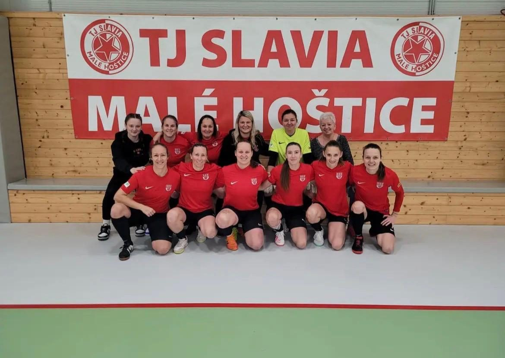
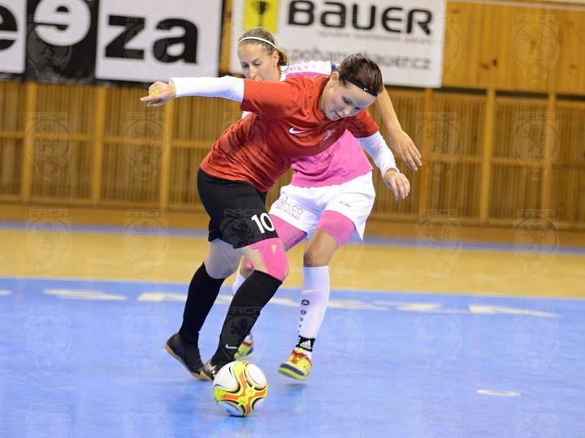
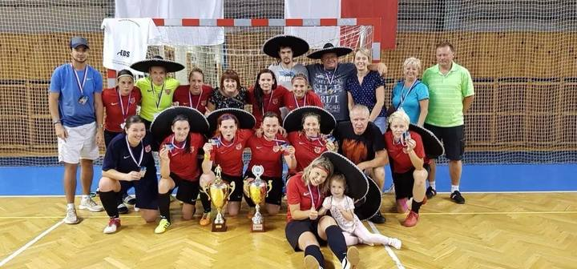
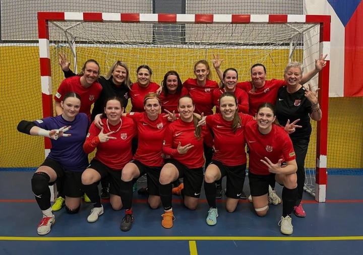
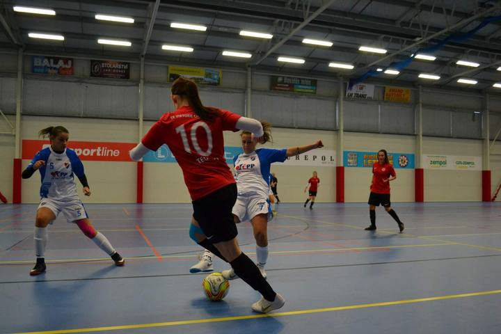
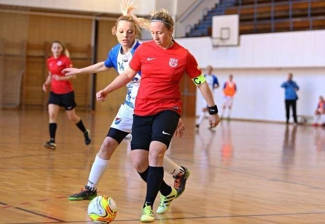
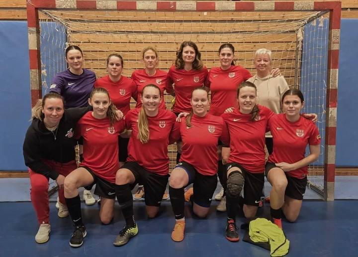
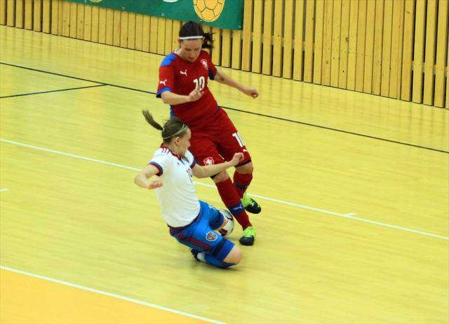
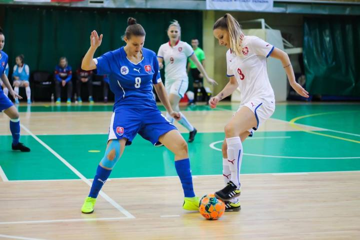
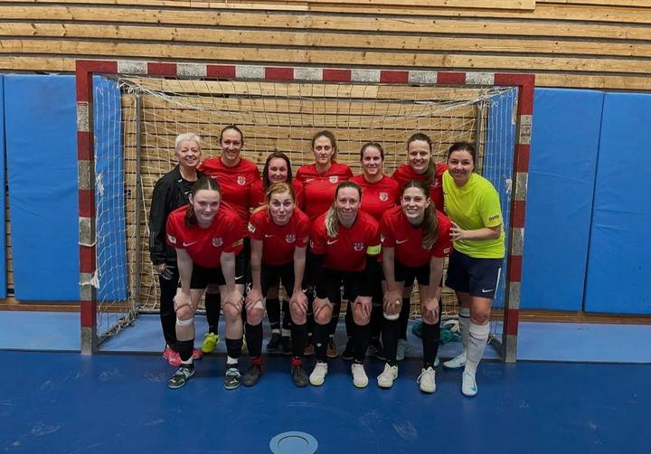
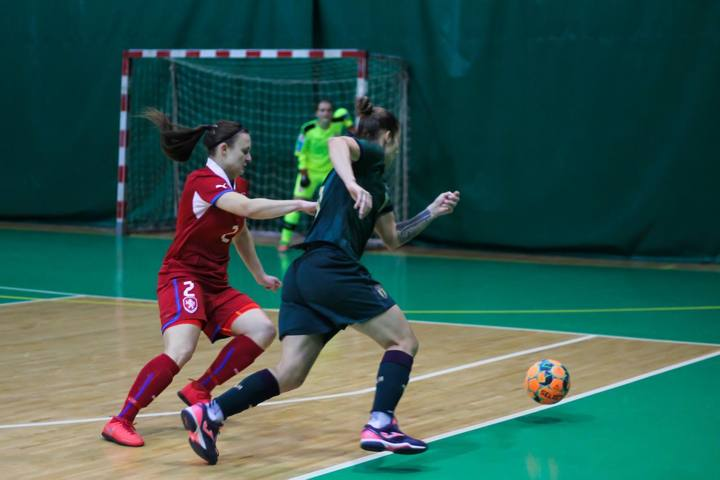
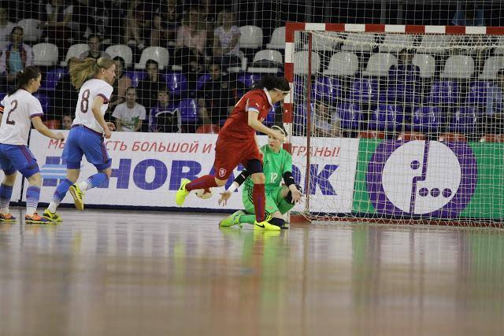
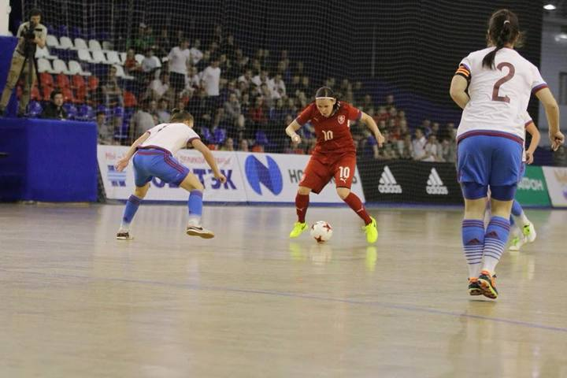
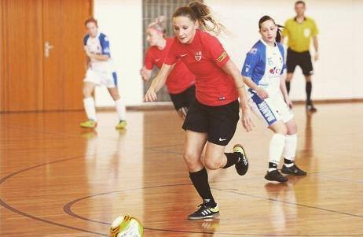
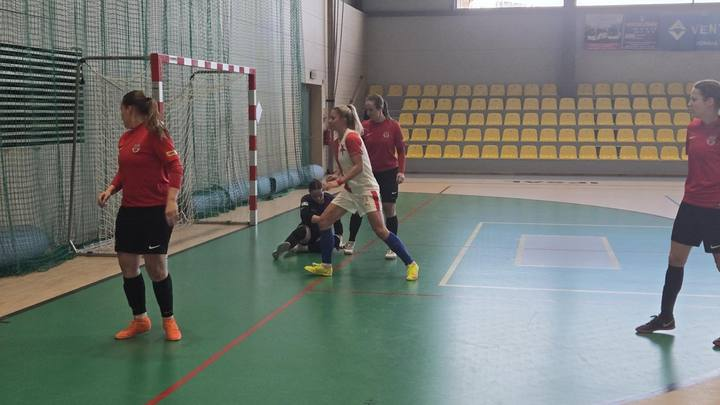
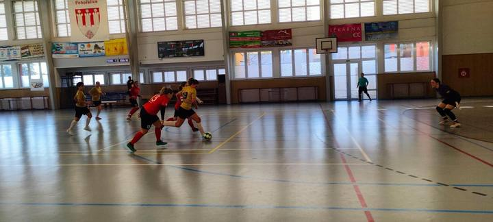
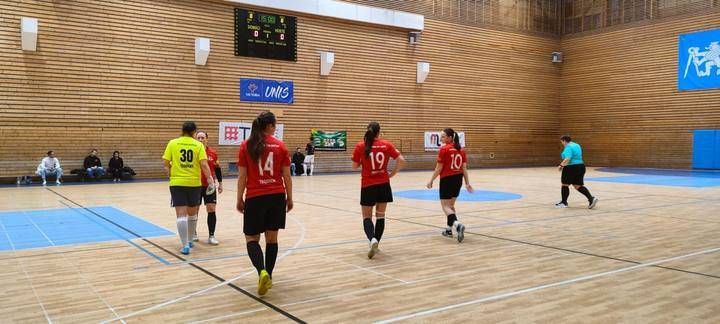
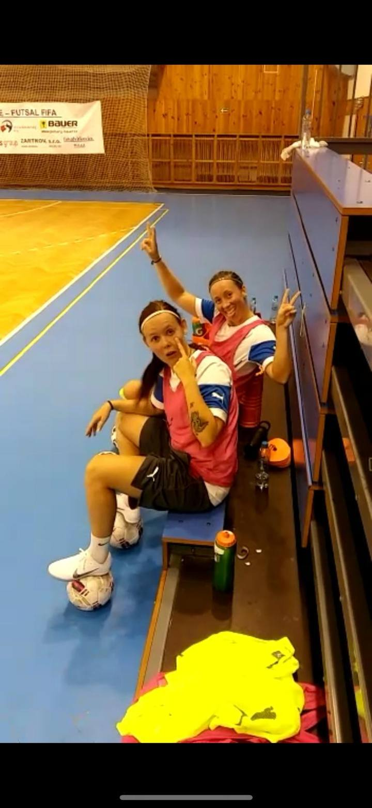
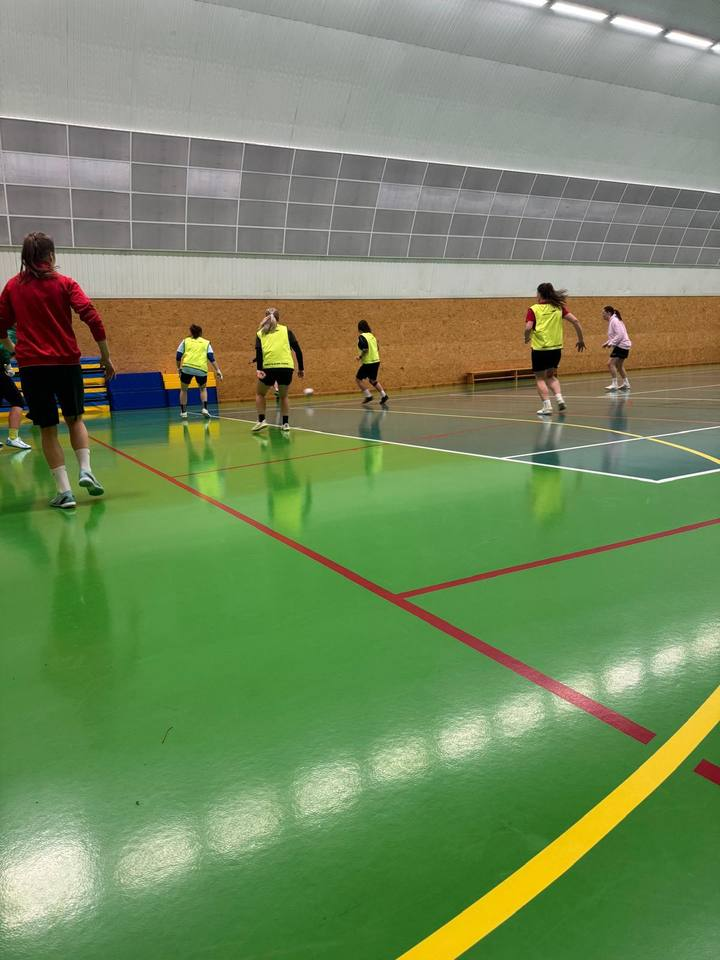
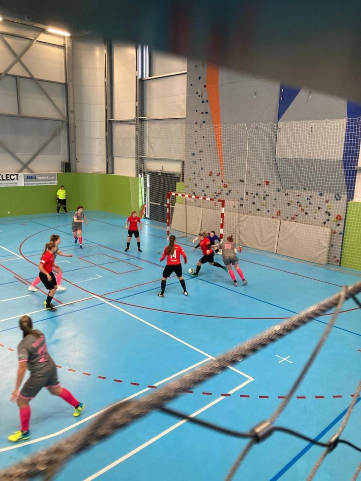
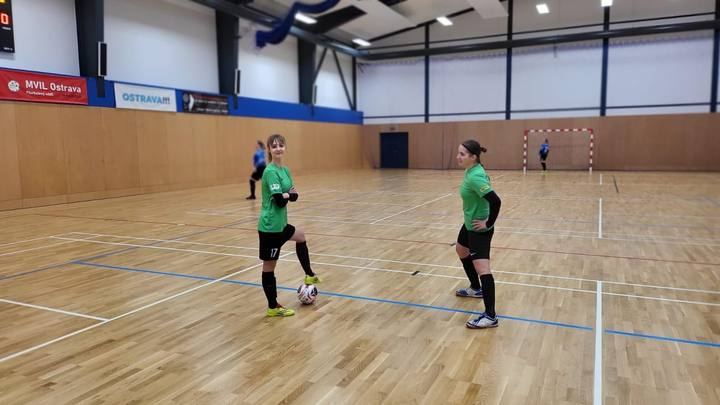
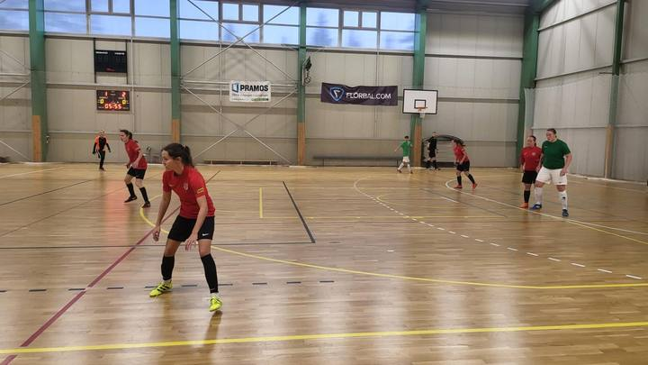
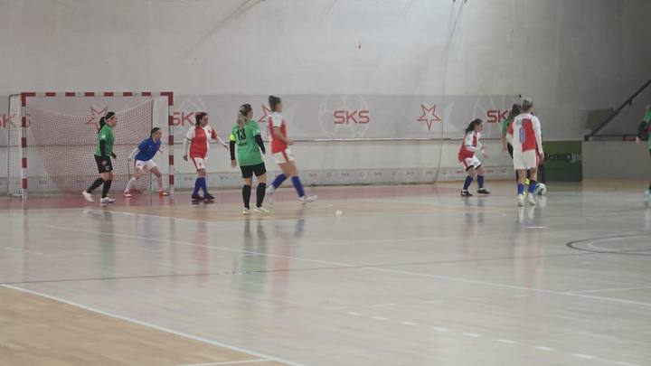
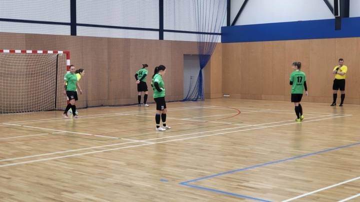
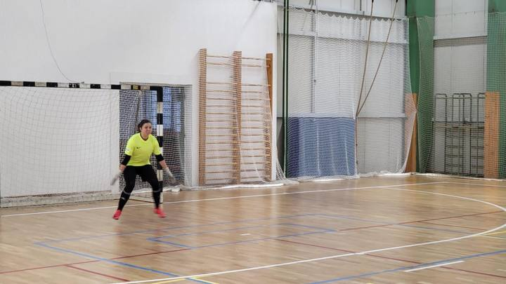
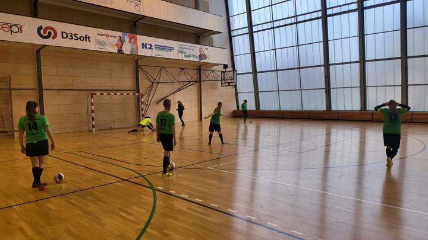
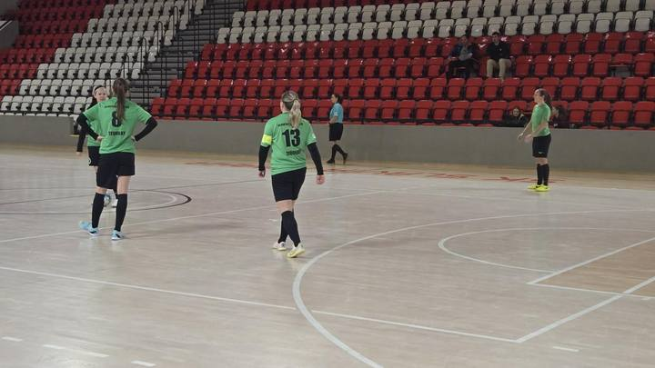
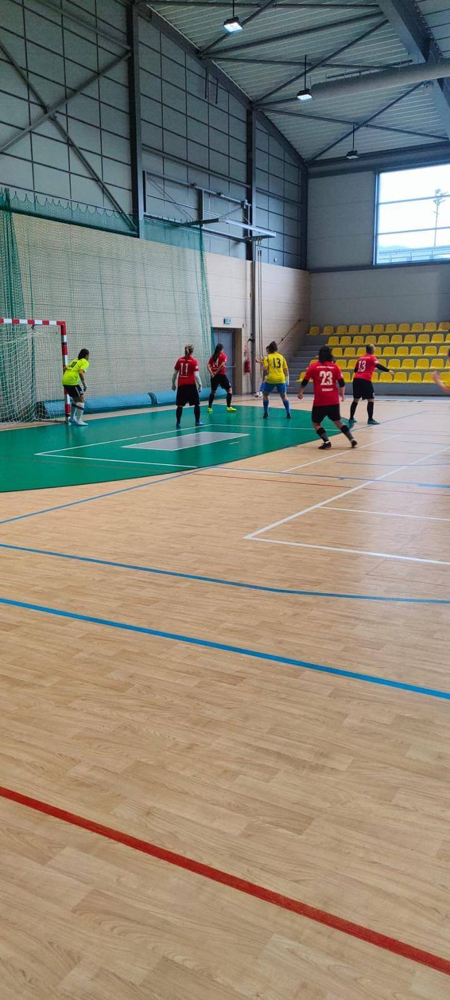


Nábor
Přidejte se k nám
Hrajeme spolu přes dvacet let a pořád nás to baví.
Jsme otevřené holkám, které si chtějí futsal vyzkoušet — ať už máte za sebou roky fotbalu, nebo jste ještě nikdy nehrály. Víc než na tom, jak jste na tom teď, záleží na chuti hrát.
Napište nám a domluvíme se, kdy se můžete přijít podívat na trénink.
Podpora
Hledáme partnery
I ženský futsal se v posledních letech posunul výrazně kupředu. Soutěž se rozšiřuje, přibývá cestování, kladou se nároky na vzdělání trenérů.
Chceme být i nadále obávanou konkurencí. Nestačí nám už ale jen vlastní síly a zdroje — potřebujeme pomoc zvenčí. Pomoc sportovních nadšenců, kteří vědí, co je to láska ke sportu a dovedou ocenit vytrvalost, se kterou se pereme o každý bod.
Rády se s vámi sejdeme a probereme, jak by spolupráce mohla vypadat.
Kontakt
Napište nám
Zpráva přijde přímo týmu na info@futsal-tequilky.cz.